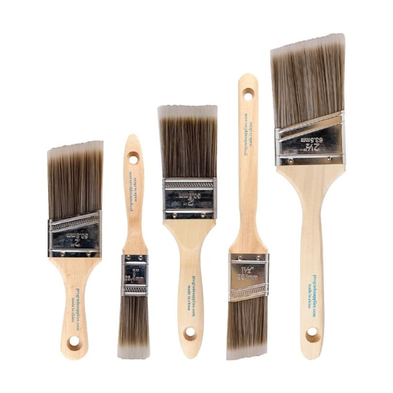

Brushes & Spray Bottles for Rock Hounding Comparison Chart
Brand: JohnBee Empty Spray Bottles (16oz)
Price: $13
Material: Plastic
Capacity: 16 ounces
View on AmazonBrand: Pro Grade Paint Brush
Price: $12
Material: Wood Handle, SRT Filaments
Capacity: 3.2 ounces
View on AmazonBrand: Chemical Guys ACC601 Detailing Brush Set
Price: $20
Material: Boar head and synthetic bristles
Capacity: 5.9 ounces
View on AmazonProduct Details
JohnBee Empty Spray Bottles (16oz)
JohnBee Empty Spray Bottles are versatile and practical tools for a variety of uses, including rockhounding. Their durable construction and convenient features make them a popular choice for cleaning and moistening specimens in the field.
Features
- Set of 2: Includes two 16-ounce spray bottles.
- Leak-Proof Design: Tight seals and secure caps prevent leaks and spills.
- Adjustable Nozzle: Allows you to switch between mist and stream spray patterns.
- High-Quality Materials: Made from durable, BPA-free plastic that's resistant to chemicals.
- Clear Bottles: Easily see the contents and fill levels.
Pros for Rockhounding
- Portable and Lightweight: Easy to carry in your rockhounding bag or backpack.
- Versatile: Can be used for cleaning rocks, moistening specimens, or applying identification solutions.
- Multiple Bottles: The set provides extra bottles for different liquids or to share with others.
- Affordable: A cost-effective option for rockhounding enthusiasts.
Cons for Rockhounding
- Not Insulated: If you need to keep liquids at a specific temperature, you'll need an additional container.
- Not Designed for Heavy-Duty Use: While durable, these bottles might not withstand excessive rough handling.
- Limited Capacity: The 16-ounce size might require more frequent refills if you're working with larger specimens.
Activities and Environments Best For
- Rockhounding in the Field: Ideal for cleaning and moistening specimens on-site.
- Rock Cleaning at Home: Useful for rinsing and cleaning collected rocks before displaying or examining them.
- Mineral Identification: This can be used to apply testing solutions to identify minerals.
- Other Uses: These spray bottles are also suitable for household cleaning, gardening, and personal care.
Overall
JohnBee Empty Spray Bottles (16oz) are a practical and affordable option for rockhounds who need a reliable and portable way to clean and moisten their finds in the field.
View on AmazonChemical Guys ACC
While primarily designed for automotive detailing, the Chemical Guys ACC 130 spray bottle is a durable and versatile option that can be repurposed for rockhounding activities. Its chemical resistance and adjustable nozzle make it suitable for various applications in the field.
Features
- Chemical Resistant: Constructed with durable plastic that can handle various cleaning solutions and chemicals used in rockhounding, such as oxalic acid or vinegar.
- Heavy Duty Construction: Designed for professional use, it can withstand rough handling and frequent use in outdoor environments.
- Adjustable Nozzle: The nozzle can be adjusted from a fine mist to a concentrated stream, providing flexibility for different cleaning tasks.
- 32-Ounce Capacity: Holds a generous amount of liquid, reducing the need for frequent refills.
- Ergonomic Design: The bottle features a comfortable grip and a trigger sprayer for ease of use.
Pros for Rockhounding
- Chemical Resistance: Can safely store and dispense various cleaning solutions used for removing dirt, stains, and oxidation from rocks and minerals.
- Durability: Built to last, even with regular use in rugged outdoor conditions.
- Adjustable Spray Pattern: Allows for precise application of cleaning solutions or water to targeted areas.
- Large Capacity: Reduces the need for frequent refilling, especially when working with larger specimens.
- Ergonomic Design: Ensures comfortable use, even during extended cleaning sessions.
Cons for Rockhounding
- Not Insulated: If you need to keep liquids at a specific temperature, you'll need an additional container.
- May Be Overkill: For those who only need a basic spray bottle for water, this might be more heavy-duty than necessary.
Activities and Environments Best For
- Rockhounding in the Field: Ideal for applying cleaning solutions, rinsing specimens, or misting rocks to enhance their colors and patterns.
- Rock Cleaning at Home: Useful for cleaning and preparing collected rocks before display or further analysis.
- Mineral Identification: Can be used to apply testing solutions to identify minerals.
Overall
The Chemical Guys ACC 130 spray bottle offers rockhounds a durable and reliable option for various tasks in the field and at home.
View on AmazonPro Grade Paint Brush
The Pro Grade Paint Brush Set can be a practical and cost-effective option for rockhounds, especially beginners or those on a budget. The Pro Grade Paint Brush Set is not specifically designed for rockhounding, but it can still be a useful tool in certain situations due to its affordability and practicality.
Features
- Synthetic Filament Blend: Designed to hold more paint for efficient coverage and a smooth finish.
- Thinner Tips: Provides better cutting control for detailed work.
Pros for Rockhounding
- Affordable: A budget-friendly option compared to specialized rockhounding brushes.
- Durable Bristles: Can withstand scrubbing and cleaning of rocks and minerals.
- Multiple Brushes: The set provides multiple brushes for different tasks or simultaneous cleaning of various specimens.
- Angled Shape: The angled bristles can help reach into crevices and uneven surfaces.
Cons for Rockhounding
- Limited Bristle Stiffness: The bristles might be too soft for removing stubborn dirt or debris on rough rocks.
- Potential for Shedding: Lower-quality synthetic bristles might shed over time with heavy use.
Activities and Environments Best For
- Rockhounding: Suitable for cleaning softer rocks, fossils, or delicate minerals.
- Fieldwork: This can be used for brushing away dust and debris from specimens on-site.
- Preparation Work: Helpful for cleaning and prepping rocks for polishing or display.
- Painting (Original Purpose): Designed for various painting projects, both interior and exterior.
Overall: This is a great brush for rockhounding, especially if you're looking for something versatile and can be used in a variety of situations. It's also a good option if you want to save money on brushes by buying one that will last longer than other models.
View on AmazonChemical Guys ACC601 Detailing Brush Set
The Chemical Guys ACC601 Brush Set offers rockhounds a convenient and effective solution for delicate cleaning tasks. While primarily designed for car interior detailing, this set of brushes can be surprisingly useful for rockhounding due to their varying sizes and soft bristles. They are excellent for delicate cleaning tasks on sensitive specimens.
Features
- Three Brushes of Different Sizes: Includes a large, medium, and small brush, catering to various cleaning needs.
- Premium Bristles: Made with a blend of boar's hair and synthetic fibers, providing effective cleaning without scratching delicate surfaces.
- Durable and Lightweight: Constructed with high-quality plastic for long-lasting use and easy handling in the field.
- Ergonomic Design: The brushes have comfortable handles for extended use.
Pros for Rockhounding
- Gentle Cleaning: The soft bristles are perfect for cleaning delicate fossils, crystals, and mineral specimens without causing damage.
- Versatile Sizes: The three different sizes allow you to reach into crevices and clean various surface areas effectively.
- Durable: The brushes are built to withstand repeated use in rugged outdoor environments.
- Lightweight and Portable: Easy to carry in your rockhounding bag or backpack.
Cons for Rockhounding
- Not for Heavy-Duty Cleaning: The soft bristles might not be effective for removing stubborn dirt or mud from rough rocks.
- Limited Bristle Stiffness: Might not be suitable for scrubbing or removing tough stains.
Activities and Environments Best For
- Rockhounding in the Field: Ideal for gentle cleaning and dusting of delicate specimens on-site.
- Fossil Preparation: Perfect for removing sediment and debris from fossils without damaging them.
- Mineral Cleaning: Useful for cleaning fragile crystals and mineral specimens to reveal their natural beauty.
- Detailed Cleaning at Home: Great for final cleaning and polishing of your finds at home.
Tools for the Best Rock Hounding Experience

Rock Hammer (click for comparison chart)
A rock hammer is an essential tool for any rock hounding enthusiast. This sturdy tool helps you break apart rocks and extract minerals with precision. By providing the necessary force and control, a rock hammer significantly reduces the effort required to collect samples. The rock hammer's ability to withstand heavy use makes it an indispensable accessory for achieving the best rock hounding results.
Using a rock hammer enhances your efficiency and increases your chances of retrieving valuable samples without unnecessary damage. This tool is especially useful in areas with hard rock formations, as it minimizes the time spent on collecting specimens. For anyone serious about rock hounding, incorporating a rock hammer into their toolkit is a step towards becoming a more effective and successful rock hounder.

Chisel Set (click for comparison chart)
A sturdy chisel set is another crucial tool for rock hounding. Designed specifically for splitting rocks and extracting minerals, a high-quality chisel set can withstand the rigors of rock hounding in various conditions. It is built to be durable and efficient, allowing you to extract samples without damaging them. This is particularly important when dealing with delicate or valuable finds, as a regular chisel might not offer the same level of precision and durability.
When selecting a chisel set, look for features such as a comfortable grip, a sharp edge for cutting through tough rock, and a strong, rust-resistant material. These characteristics ensure that your chisel set will remain reliable and effective over time, providing you with the best rock hounding experience. A reliable chisel set is an investment that pays off through improved sample recovery and preservation of your finds.

Field Bag (click for comparison chart)
A field bag is an essential accessory for keeping your tools and samples organized and secure while you are out rock hounding. These bags are designed with multiple compartments to separate different types of tools and samples. This organization helps you keep track of your valuable finds and ensures that they are protected during your rock hounding sessions.
Using a field bag also enhances your efficiency in the field. Instead of carrying loose items in your pockets, which can be inconvenient and risky, a field bag provides a dedicated space for your tools and samples. Look for bags made from durable materials with secure closures, ensuring that your finds remain safe and easily accessible. For the best rock hounding experience, a field bag is a must-have tool that contributes to better organization and protection of your discoveries.

Safety Glasses (click for comparison chart)
Safety glasses are a crucial accessory for rock hounding, providing protection for your eyes against flying debris and sharp fragments. These glasses are designed to be durable and comfortable, ensuring that you can wear them for extended periods without discomfort. By wearing safety glasses, you can prevent eye injuries and work more confidently in various rock hounding environments.
Look for safety glasses with features such as anti-scratch coating, UV protection, and a comfortable fit. These characteristics ensure that your safety glasses remain effective and reliable over time, providing you with the best protection for your eyes. For the best rock hounding experience, investing in a pair of high-quality safety glasses is essential.
Rock Hounding Spray Bottles and Brushes FAQ
What types of brushes are best for cleaning rocks and minerals?
The best brushes depend on the specimen and the level of cleaning needed.
Soft-bristled brushes: Made from natural hair or nylon, these are ideal for delicate minerals and fossils to avoid scratching.
Stiff-bristled brushes: Made from brass or stainless steel, these are better for removing stubborn dirt and debris on harder rocks.
A variety of sizes will help you reach different crevices and surfaces.
Why do I need a spray bottle for rockhounding?
A spray bottle is a versatile tool for:
Wetting rocks to reveal their true colors and patterns.
Cleaning dirt and debris off specimens.
Applying cleaning solutions like diluted vinegar or oxalic acid.
Cooling down rocks after using a rock saw.
What type of spray bottle is best for rockhounding?
Look for a spray bottle that is:
Durable: Choose a bottle made from sturdy plastic that can withstand outdoor use.
Chemical resistant: Some cleaning solutions can damage certain plastics, so ensure the bottle is compatible.
Adjustable: A nozzle that can be adjusted from a fine mist to a strong stream is ideal.
Easy to use: A comfortable grip and a pump action or trigger sprayer can make a difference in the field.
What cleaning solutions can I use in a spray bottle for rockhounding?
Common cleaning solutions for rockhounding include:
Water: The simplest and often most effective way to clean rocks.
Diluted vinegar: Can help remove mineral deposits and stains.
Oxalic acid: More potent for removing tough stains and rust.
Commercial rock cleaning solutions: Formulated specifically for cleaning rocks and minerals.
How do I care for my rockhounding brushes and spray bottles?
Rinse brushes thoroughly after each use to remove dirt and debris.
Store brushes in a dry place to prevent mold or mildew growth.
Empty and rinse spray bottles after using cleaning solutions to prevent clogging or corrosion.
Replace worn-out brushes and spray bottles as needed to maintain their effectiveness.
This page contains Amazon affiliate links. Rockhounding.org earns a small commission on any purchases made, but this does not affect the price you pay. It's a great way to support the site. Thank you!